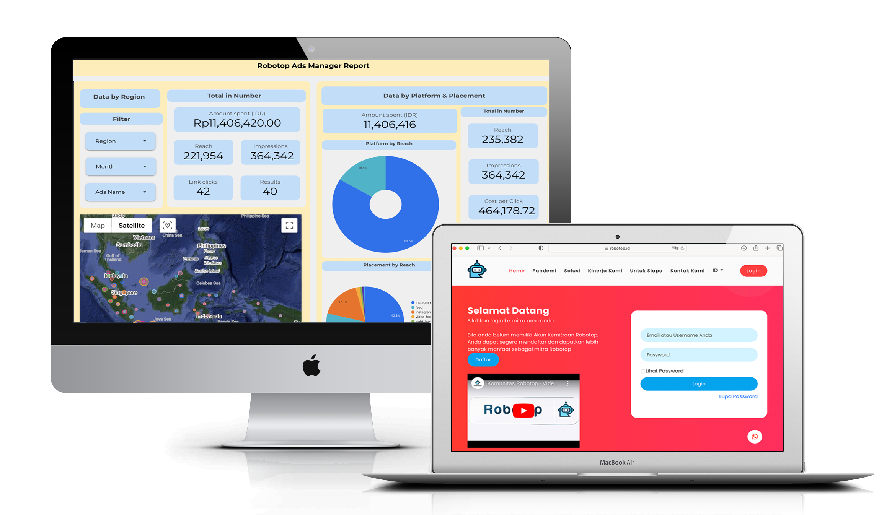
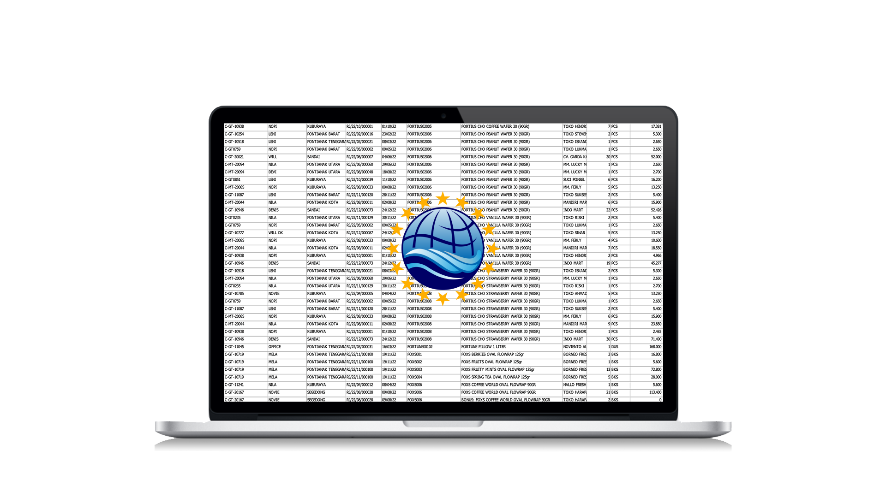
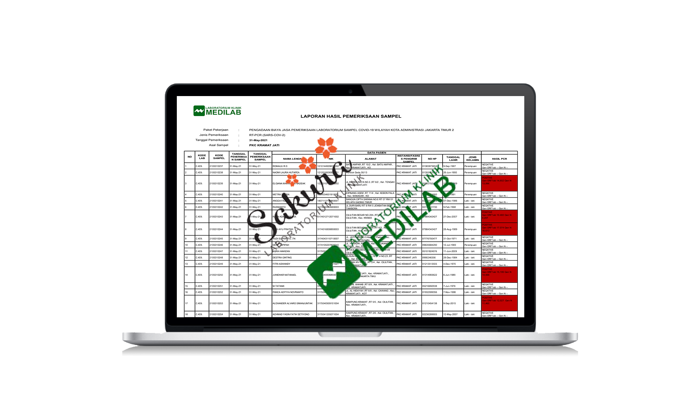
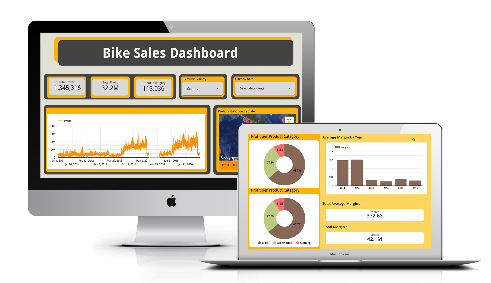
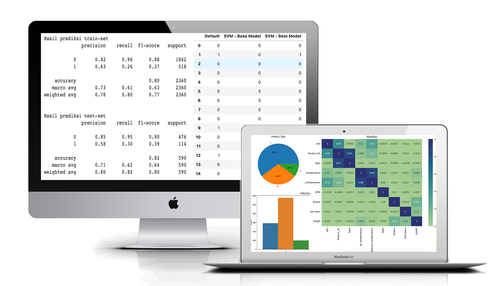
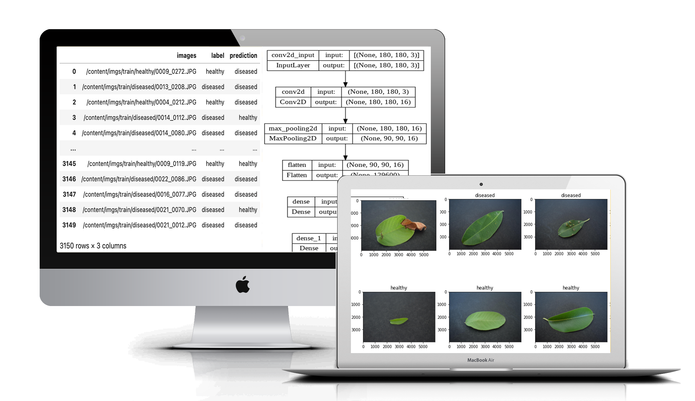
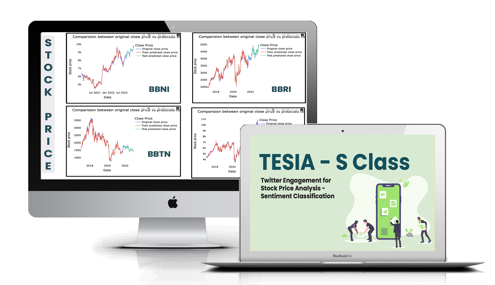

Venu Fitratama
Business Analyst · Data Analyst · Business Development



Looker Data Studio | Google Slides | Github

Machine Failure: Google Slides | Github
Credit Card Prediction: Google Slides | Github

Google Slides | Github

Google Slides | Github

Google Slides | Github

Python (Basic), SQL (Basic), SQL (Intermediate) Issued by HackerRank
Tax Bases Issued by Spectra Centre
Liaison Staff Issued by ISC of Tanjungpura University
ITP TOEFL Issued by IIEF
---ⓒ Feb 2023
---
West Kalimantan, Indonesia · (+62) 821-2227-1997 ·
venufitratama2@gmail.com
I'm a business professional of Economics and Business, over three years of experience in Business Analysis and Development. My strengths lie in data analysis, using data-driven insights to drive growth and maximize revenue. I'm passionate about helping companies achieve their goals and bringing innovative solutions to the table.
Education
Tanjungpura University
Master of Economics and Business
West Borneo, Indonesia
GPA: 3.94/4.00 | Transcript
Jan 2022 - Present
Oct 2022 - Dec 2022
Tanjungpura University
Bachelor of Economics and Business
West Borneo, Indonesia
GPA: 3.60/4.00 | Transcript
Sep 2016 - Jul 2020
Skills
Programming Languages
Python, iPython Notebook, SQL
Environtments
Github, Google BigQuery
Tools
Visual Studio Code, Looker Data Studio, Tableau, Docker, Microsoft Office Suite, Google Drive Suite, Photoshop
Libraries
Numpy, Pandas, Matplotlib, Seaborn, Scikit-Learn, Tensorflow, Keras, Streamlit
Machine Learning
Convolutional Neural Network, Recurrent Neural Network, Computer Vision, Natural Language Processing
Experience
Robotop Indonesia
Business Development | Ads Report Sample
- Making promotion decisions based on available advertising data to reach a wider client base.
- Developing a specialized e-commerce application for forex trading for the Indonesian market.
- Conducting business development by testing health products in the Pontianak market.
Feb 2023 - Present
CV Bintang Pasific Globalindo
Business Analyst | Sales Report Sample
- Create a salesman presentation dashboard every month for a period of 1 month to see salesman KPIs.
- Evaluating the company's needs, particularly for sales officers and developing solutions to meet those needs.
Oct 2022 - Jan 2023
PT Sakura Diagnostika Medika
Business Analyst | Ms. Excel Report Sample
- Performed calculations to open or close a new operational branch by using an internal program called Biosys Lab Software combined with pivot table.
- Make decisions to hire or fire an employee for business effectiveness and efficiency.
Jan 2022 - Jan 2023
PT Prima Indo Medilab
Project Manager
- Create daily, weekly and monthly report dashboard of Covid-19 case in East Jakarta.
- Pro-active as a team leader to manage the team work system.
Oct 2020 - Dec 2021
Data Analyst/ Data Science Portfolio
Bike Sales Distribution
Looker Data Studio | Google Slides | Github
According to this sales data, the records of sales is from 2011 - 2016, with detail of products info, customers info and price and profit per product. Since we need to know which country have most buyers, how much profit the store make and what kind of products category have most sales, i will explore more about this data especially on country, state, sub category products and how much profit do they earn. This data exploration will answer these questions : What is the most product sales in every year? Who is the most segmented gender that buy the product? Where is the most product sold? When is the company have most profit margin? Why did the company should expand or not? and How is the increase or decrease of profit every year?
Machine Failure & Credit Card Predictions using Machine Learning
Machine Failure: Google Slides | Github
Credit Card Prediction: Google Slides | Github
Create a classification model to predict machine failure & default payment next month with the datasets. implementing supervised learning and unsupervised learning, model evaluation, model tuning, and model deployment. Scikit-learn was used as machine learning library. Scikit-learn model used are Logistic Regression, Support Vector Machine, K-Nearest Neighbors, Gaussian Naive Bayes, Random Forest, Adaptive Boost
Customer Churn Prediction using Deep Learning
Google Slides | Github
Create a Deep Learning Model - Artificial Neural Network to see Telco Customer Churn. Library used are scikit-learn, tensorflow & keras. In the inference model, there are 81 data on label No and 19 data on label Yes, whereas in the original dataset, there are 79 data on label No and 21 data on label Yes.
Image Classification for Healthy and Diseased Leaves using Computer Vision
Google Slides | Github
Using the concept of Computer Vision/NLP, preparing data for use in the Computer Vision/NLP model taken from kaggle. Implementing Artificial Neural Network with existing data. Analyzing and explaining the layers created. Library used are Tensorflow & Keras
Twitter Engagement for Stock Price Analysis using NLP, GRU & LSTM Methods
Google Slides | Github
On the off chance which stocks do we actually need to purchase? To help answering that question, the model was created, “Twitter Engagement for Stock prIce Analysis - Sentiment CLASSification (TESIA - S Class)” to make it less demanding to decide the stock to be acquired according to time series prediction and twitter sentimental classification.
Related Certificate
Full Time Data Science Issued by Hacktiv8 IndonesiaPython (Basic), SQL (Basic), SQL (Intermediate) Issued by HackerRank
Tax Bases Issued by Spectra Centre
Liaison Staff Issued by ISC of Tanjungpura University
ITP TOEFL Issued by IIEF
---